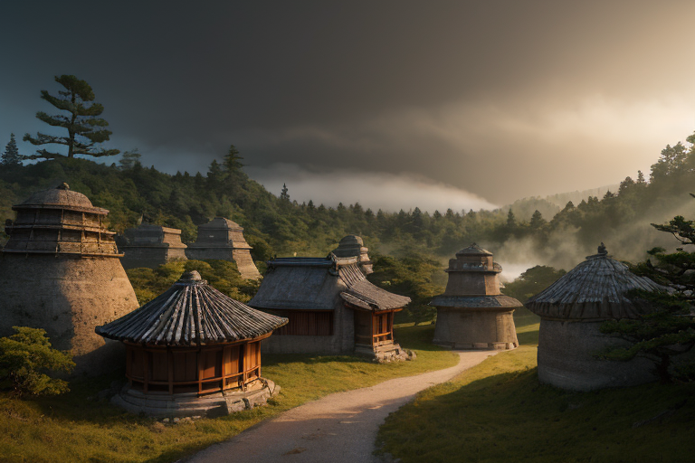
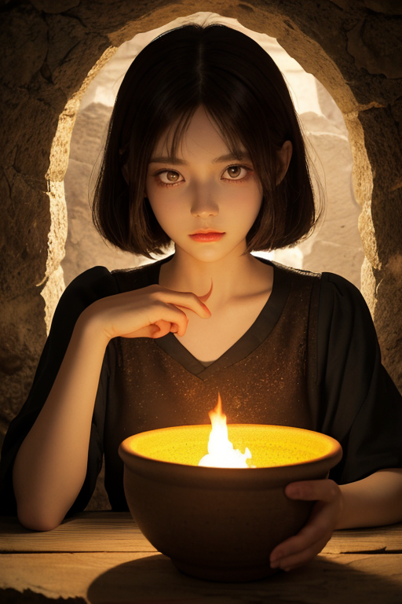
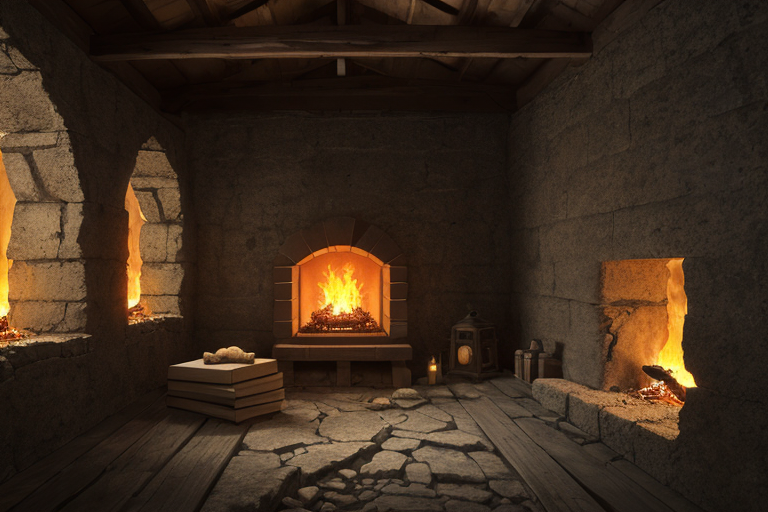
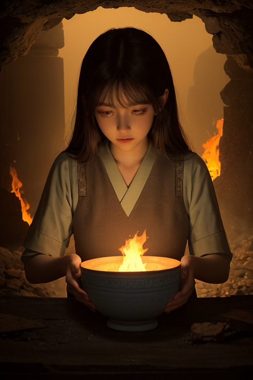

第一章 現実の佐賀
あなたはまだ気づいていない。この土地にも、王がいることを。
有田陶磁の里の坂道は、朝靄に包まれていた。窯元から漂う微かな土の匂い。轆轤の音も、絵付をする職人の息づかいも、すべてが深い静寂に飲み込まれている。ここでは、四百年という時間が陶土のように積層し、固められてきた。日常とは、そうした層の一番上を、そっと歩くことに他ならない。
その静けさの底で、何かが眠っている。吉野ヶ里遺跡の甕棺に封じられた古代の息吹。虹の松原の砂に刻まれた風の記憶。そして、有田の地中深く、陶土の層を隔てて存在する「歪み」――それは列島を形成する巨大な力の、ほんの一端でしかない。大地は常に微かに蠢き、均衡を求めている。その均衡が破られる時、人々はそれを災害と呼ぶ。
誰も知らない。この静謐が、絶え間ない調整の上に成り立っていることを。陶土が熱によって形を変えるように、この土地の現実も、目に見えない手によって絶えず調整され続けている。

第二章 歪みの兆候
吉野ヶ里遺跡の環濠に、朝露が落ちた。弥生の昔から続く静けさが、今、微かに乱れていた。地中を流れる歪みの波長が、ここ数日、陶土の層を伝って不規則な振動を送り続けている。それは、サガリア・アンバーが有田の窯元の片隅で感じ取った、かすかな「軋み」だった。
彼の眼前で、主席妖精アンベラが掌をかざす。琥珀色の紋章が浮かび、地中の陶土層を映し出す。そこには、幾重にも施された「陶封印」の結界が、火芯円を核として静かに回転していた。しかし、その円環の一部に、ごく細かいひびが走っている。四百年の歳月が有田焼に深みを与えるように、この封印にも、長い時間による疲労が蓄積されていた。
「火圧、不安定です」アンベラの寡黙な報告は、事実を淡々と述べるだけだった。だが、その言葉の裏には、制御不能に陥る炎への警戒が込められていた。静火王は、指先で虚空を撫でる。ひび割れから漏れ出す、歪みの熱を直接、自らの内に取り込み、中和する。それは彼の「静かな情熱」の行使である。痛みはない。ただ、内なる火が、外部の乱れに呼応して微かに膨らむ感覚だけがあった。
この調整が、いつまで続けられるのか。彼は、窓の外に広がる虹の松原の緑を見つめた。静謐は、常に脆い均衡の上にある。

第三章 王の葛藤
有田陶磁の里の古い登り窯は、今は静かに眠っていた。サガリア・アンバーはその前に立ち、掌をかざした。陶土の妖精アンベラが、無言で彼の横に立つ。窯の内部には、四百年分の焼成の記憶が、地層のように蓄積されている。それはこの土地の「歪み」を安定させる巨大な鎮め石でもあった。
しかし最近、その地層に微かな揺らぎが生じていた。吉野ヶ里の遺跡の下で、弥生の昔から続く地脈のリズムが、僅かに乱れ始めている。彼はそれを感じ取る。封じ込められた陶土の記憶が、地殻の圧力に呼応して、呻きを上げようとしている。
解放すべきか。歪みの一部を、この窯の記憶に封じ込まれた「静火」で焼き払い、地脈を一時的に鎮静させる手はある。だが、それは封印そのものを脆弱にし、制御不能な解放へと繋がる恐れがあった。彼の内なる情熱は、その危険な炎に、ほのかな親和を覚えさえした。
彼は目を閉じた。掌に、嬉野温泉の柔らかな熱とは異なる、鋭い地の熱が伝わってくる。続けるのか。それとも……。琥珀色の瞳の奥で、静かな炎が、初めて激しく揺らめいた。

第四章 妖精との対話
「王よ。」
アンベラの声は、窯の底から聞こえる微かな土の軋みのようだった。彼女は、有田の古窯跡に積もった陶片の山の前に佇んでいる。
「この地には、二つの火があります。一つは、土を焼き固め、器を生み出す窯の火。もう一つは、歪みを焼き固め、災いを封じる『静火』です。」
彼女の指が、一片の染付の破片に触れる。それは、歪みの記憶を封じ込めた陶封印の一つだった。
「四百年。有田の火は、歪みを器に封じ込めることで、列島の軋みを担ってきました。それは、決して消えてはならない静かな情熱です。」
アリタナが頷く。「しかし、火は封じ込められ続けると、いつか自らを喰らいます。今、その時が近い。歪みが強まる今、封じた火を解けば、一時の鎮静は得られるでしょう。だが、制御を失った火は、この里も、この国も、焼き尽くすかもしれません。」
アンベラの瞳は、深い土色をしていた。
「問いは一つ。この静かな情熱を、封じたまま朽ちさせるか。それとも、解き放ち、全てを焼き払うか。王よ、あなたの内なる火は、既に答えを知っているのではないですか。」
第五章 微調整と余韻
有田陶磁の里の夜は、窯が冷める音で満ちていた。サガリア・アンバーは、掌に載せた小さな陶片を見つめていた。歪みの波は、彼が内に封じた静火を以て、かすかに、しかし確かに調整されていた。全てを焼き尽くす解放ではなく、自らを喰らう封印の継続でもない。彼が選んだのは、器が割れる一歩手前で、釉薬のひびを微調整するような第三の道だった。
代償は大きい。彼の内なる火は、調整のたびに少しずつ、確実に減衰していく。感情らしきものが芽生え始めたこの地で、彼は再び無に近づいていく。アンベラが差し出した新たな陶土の器に、彼は残りの火を移し、封印を修復した。器の表面には、琥珀色の火芯が、かすかな脈動を保っていた。
「続きますか」アンベラが呟いた。
王は頷いた。静かな情熱は、消えゆく炎のように、長く、ほのかに、続いていく。それが、この歪みの列島を護る王の、せめてもの矜持だった。
あなたの町にも、王がいる。